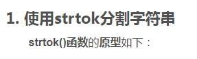

header in c: string.h
char *__cdecl strtok(char *_String, const char *_Delimiter)

- #include <stdio.h>
- #include <string.h>
- #include <stdlib.h>
- char string[] = "A string\tof ,,tokens\nand some more tokens";
- char seps[] = " ,\t\n";
- char *token=NULL;
printf( "Tokens:\n" );
token = strtok( string, seps);
while(token !=NULL){
printf("%s\n",token);
token=strtok(NULL,seps);//strtok第一个参数传入NULL，使用之前保存的SAVE_PTR定位下一个待处理的字符的位置
}
return 0;

- Tokens:
- A
- tokens
- and
- some
- more
- tokens

- #include <stdlib.h>
- #include <stdio.h>
- #include <string.h>
-
- int main()
- {
- char string[] = "A string\tof ,,tokens\nand some more tokens";
- char seps[] = " ,\t\n";
- char *token = NULL;
- printf("Tokens:\n");
- char* ptr = NULL;
- token = strtok_s(string, seps, &ptr);//相较于strtok()函数，strtok_s函数需要用户传入一个指针，用于函数内部判断从哪里开始处理字符串
- while (token != NULL) {
- printf("%s\n", token);
- token = strtok_s(NULL, seps, &ptr);//其他的使用与strtok()函数相同
- }
- return 0;
- }

- Tokens:
- A
- tokens
- and
- some
- more
- tokens

- #include <iostream>
- #include <fstream>
- #include <stdlib.h>
- #include <string.h>
- #include <string>
- #include <vector>
-
- using namespace std;
-
- struct Point {//构造一个Point类，用来存储点的信息（三坐标）
- double x, y, z;
- Point() :x(0), y(0), z(0) {}
- Point(int a, int b, int c) :x(a), y(b), z(c) {}
- void printPoints() { cout << "x:" << x << " y:" << y << " z:" << z << endl; }
- };
-
- int main()
- {
- string tmp;
- ifstream inFile("test.txt");//txt文件名
- vector<Point> points;
- if (inFile) {
- char string[100];
- while (getline(inFile, tmp)) {
- strcpy_s(string, tmp.c_str());
- double a, b, c;
- char seps[] = "|";
- char* token = NULL;
- char* ptr = NULL;
- //存入x
- token = strtok_s(string, seps, &ptr);
- a = atof(token);
- //存入y
- token = strtok_s(NULL, seps, &ptr);
- b = atof(token);
- //存入z
- token = strtok_s(NULL, seps, &ptr);
- c = atof(token);
- //将x,y,z构造point类，存入point数组中
- Point pt(a, b, c);
- points.push_back(pt);
- }
- }else {
- cout << "No such file!" << endl;
- }
- for (auto pt : points) {//输出points所有点的坐标
- pt.printPoints();
- }
-
- return 0;
- }